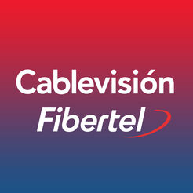

Working experience
Experiencia laboral
-

I'm currently working at Solstice as a Technical Consultant. My job is not only to deliver reusable and scalable code, but also to be able to guide our clients from a technical perspective to obtain an excellent product
Actualmente trabajo en Solstice como Consultor Tecnico Mi trabajo es no solo entregar un codigo reusable y escalable, sino ademas poder guiar a nuestros clientes desde una perspectiva tecnica para obtener un producto de excelencia.
read more ver más -
August 2014 - April 2015
Agosto 2014 - Abril 2015
Access informática
-

March 2006 - August 2014
Marzo 2006 - Agosto 2014
Cablevisión - Fibertel - Personal
Website Sitio webCablevisión is the biggest internet, television and telephony provider in Argentina. It's present in 12 provinces and more than 100 towns in Argentina and Uruguay.
Cablevisión es la compañia de internet, television y telefonia mas grande de Argentina. Es una compañía de telecomunicaciones presente en 12 provincias y más de 100 localidades de Argentina y en Uruguay.
read more ver más